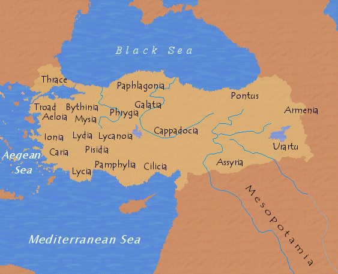

Ancient Civilizations in Anatolia
Anatolia had been selected by lots of civilizations, have you ever asked why?
- It is surrounded by sea on west, south and north. People in Africa, Europe and Asia can access there easily.
- Climate conditions are very well.
- Lands are rich of minerals and water resources are of course enough because of seas and lakes, so the productivity is at its highest level.

Anatolian Civilizations in Order
- Persians (543 - 333 BC)
- Macedonian Empire
- Roman Empire
- Byzantine (395 - 1071)
- Turks (1071 - now)